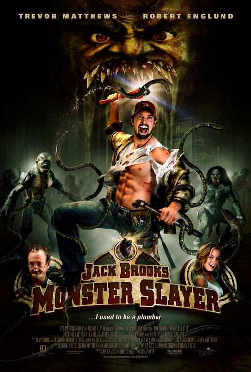
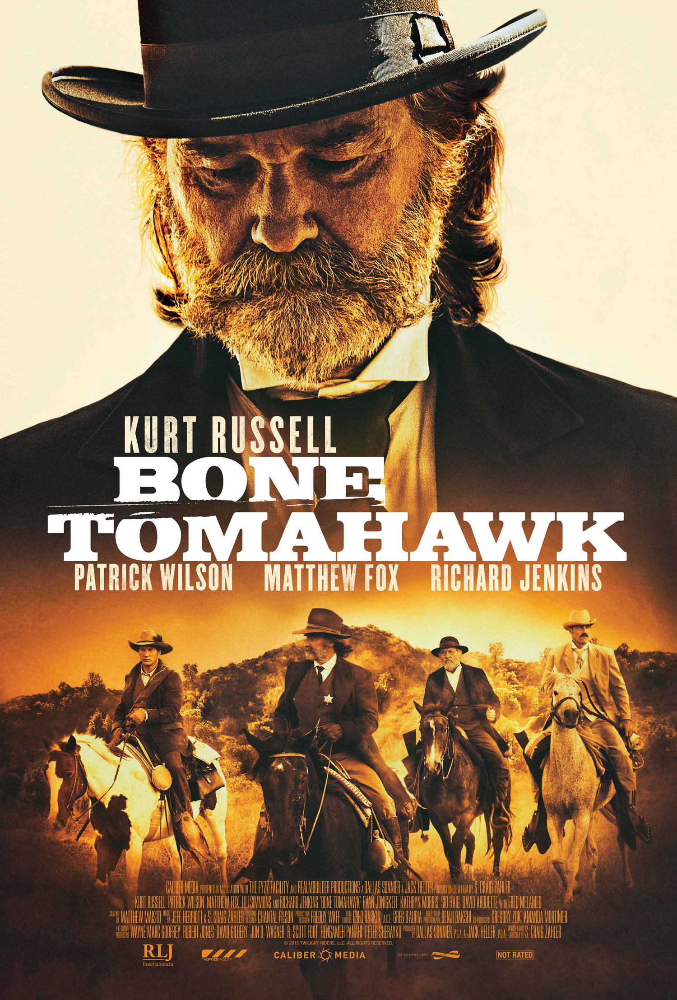
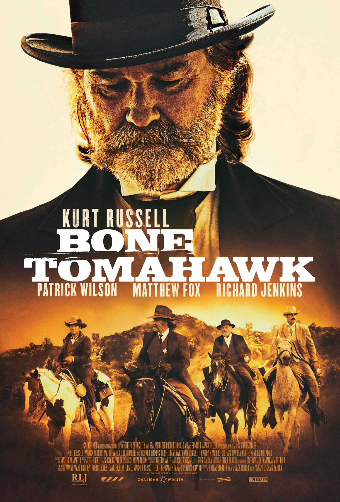
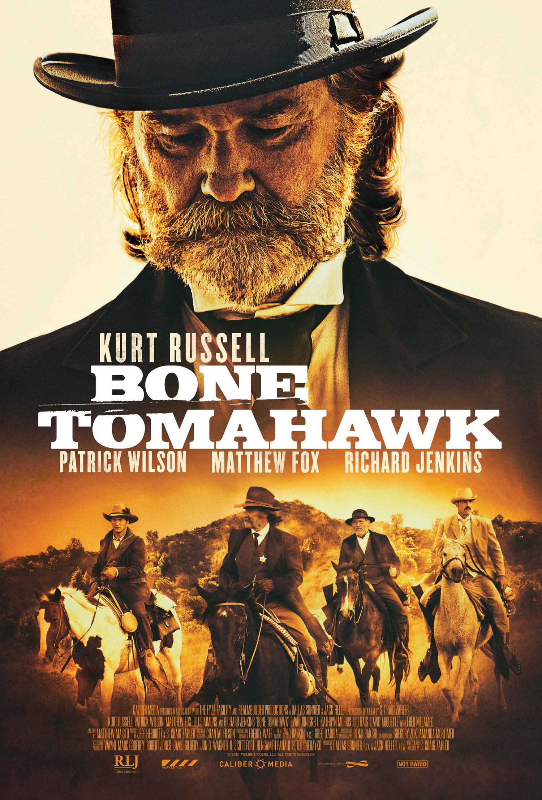

Home
Top Movies of the Year
Favorite Shows
Favorite Movies
My Top 5 favorite movies
1. Jack Brooks Monster Slayer

2. The Evil Dead
3. Lord of the Rings Return of the King
4. Bone Tomohawk

5. The Godfather 2
 3. Lord of the Rings Return of the King
3. Lord of the Rings Return of the King
 4. Bone Tomohawk

5. The Godfather 2
4. Bone Tomohawk

5. The Godfather 2